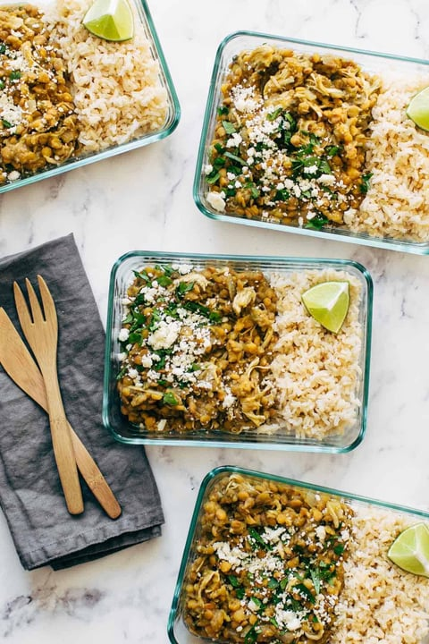

Cilantro Lime Chicken and Rice

Description
Need a yummy switch up to your plain lemon pepper chicken and rice? This dish has
a nice kick from jalapenos, and excellent flavoring from onions, cilantro, and limes.
enjoy this simple, but delicious spicy lime meal to hit your carb and protein targets
for the day. All ready within 15 mintues!
Ingredients
- 2 cups dried lentils
- 1lb. bonesless skinless chicken breast (or thighs)
- 3 cups salsa verde
- 3 cups chicken broth
- 1/2 small onion, chopped
- 3 green onions, chopped
- 1/2 cup cilantro, chopped
- 3 cloves garlic, minced
- 2 jalapenos, diced (ribs and seeds removed)
- 1/2 teaspoon salt, plus more to taste
- 1-2 limes
Steps
- Add everything to the Instant Pot except the lime juice.
- Cook for 30 minutes on Soup setting. Quick release the steam. Stir it
all up and add more salsa verde as desired.
- Serve with rice and a squeeze of lime!